Matematika · 10 klasė · 11. Pasiruošimas PUPP
← Atgal į temą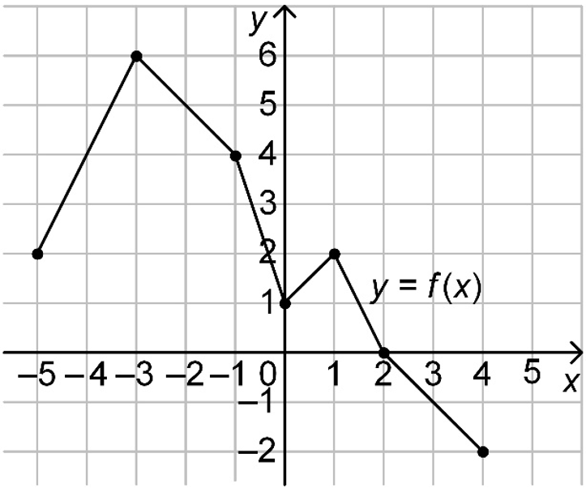
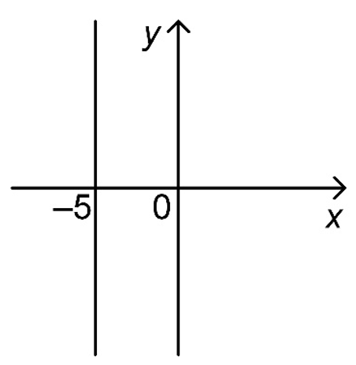
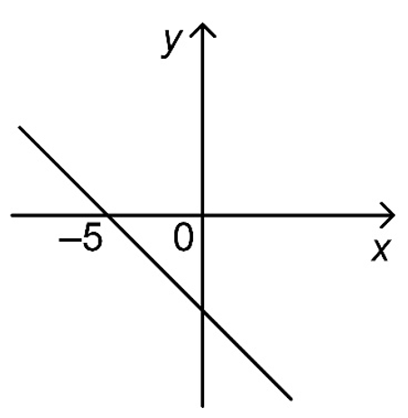
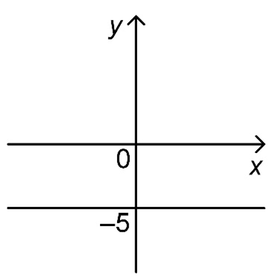
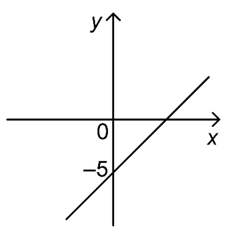
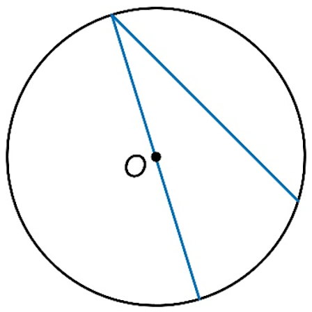
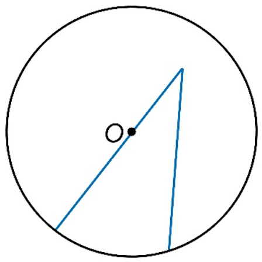
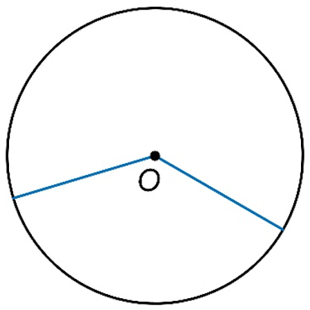
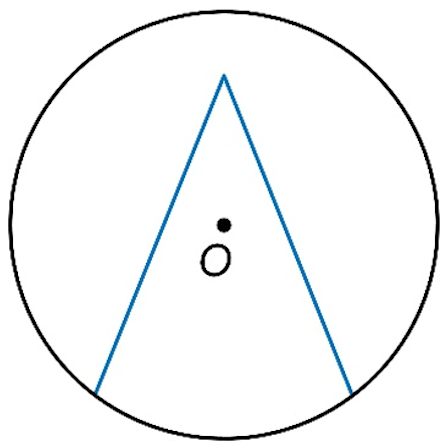
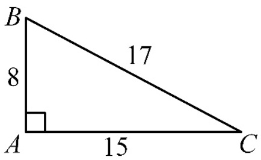
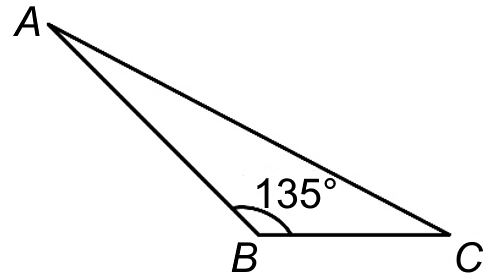
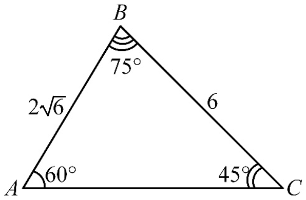
S = 12 · 6 · 2√3 · sin ⊡°
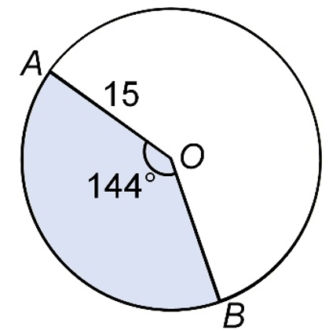
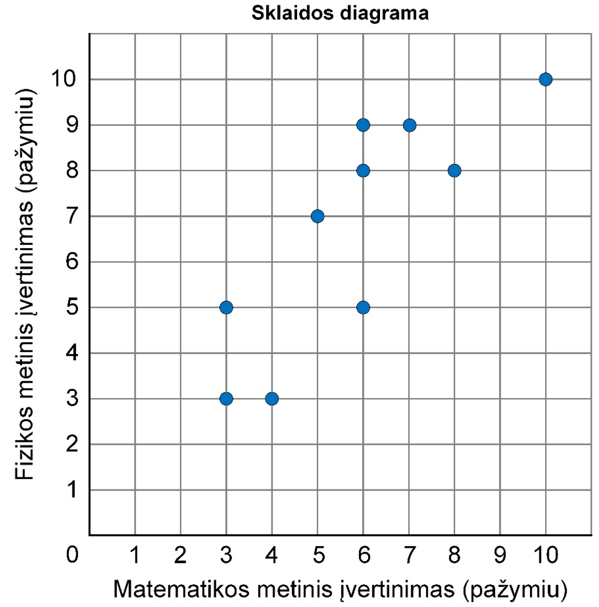
Naudodamiesi diagramoje pateiktais duomenimis, pabaikite pildyti lentelę — į tuščius lentelės langelius įrašykite trūkstamus skaičius taip, kad lentelėje būtų surašyti visi duomenys.
| Matematikos pažymys | 3 | 3 | 4 | 5 | ? | 6 | 6 | 7 | 8 | 10 |
|---|---|---|---|---|---|---|---|---|---|---|
| Fizikos pažymys | 3 | 5 | 3 | 7 | 5 | 8 | 9 | 9 | ? | 10 |
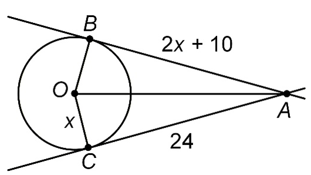
16.1. Parodykite, kad x = 7. Pateikite sprendimą. (1 taškas)
16.2. Apskaičiuokite atkarpos OA ilgį, jeigu yra žinoma, kad x = 7. Pateikite sprendimą ir atsakymą. (2 taškai)
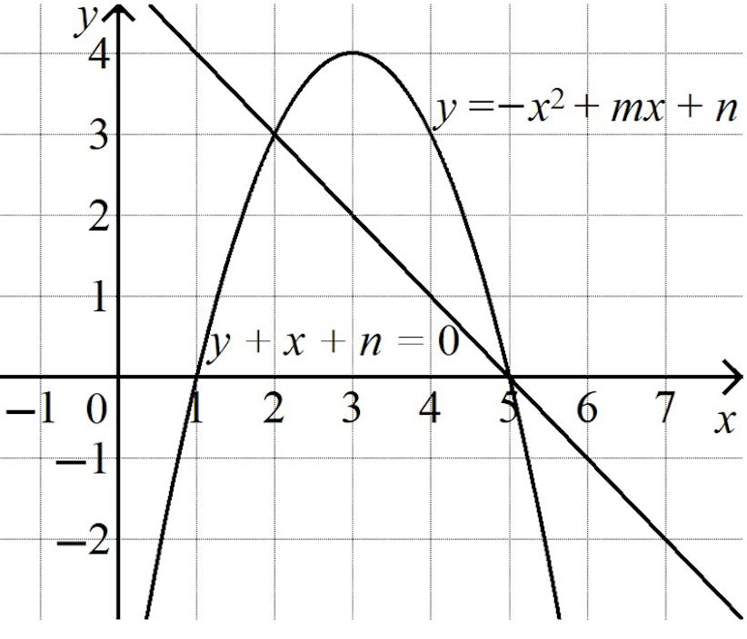
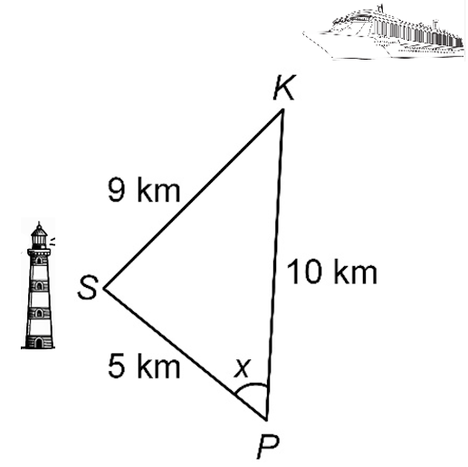
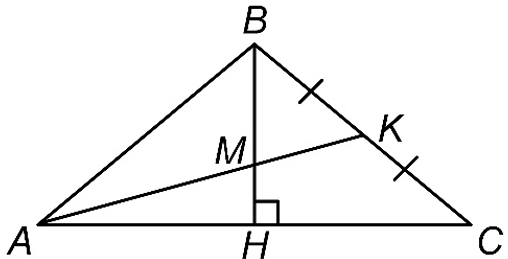
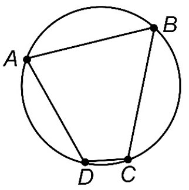
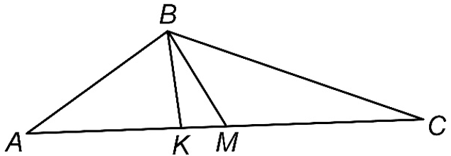